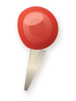

1
Kolik toho bude?
Počítám s pracovním objemem cca 90 % nádoby, aby zůstalo místo na startér, placku a bezpečnou manipulaci.
Spočítá nálev, odhadne hrozící průšvih a řekne, kdy ochutnat.
Počítám s pracovním objemem cca 90 % nádoby, aby zůstalo místo na startér, placku a bezpečnou manipulaci.
Minimum startéru je 10 % z celkového plánovaného objemu, ideál 10–15 %.
Minimum je cca 40 g/l, bezpečné rozmezí 50–70 g/l.
Jakmile budou základní poměry dávat smysl, Kombuchátor ukáže předpověď.

Fermentační přehled živých várek.
Tady si necháš recepty, které chceš zopakovat, doladit nebo poslat dál.
 ml
ml